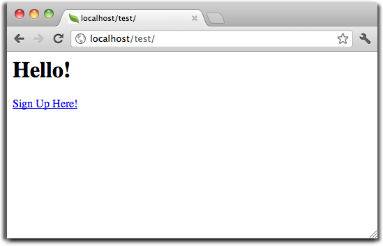
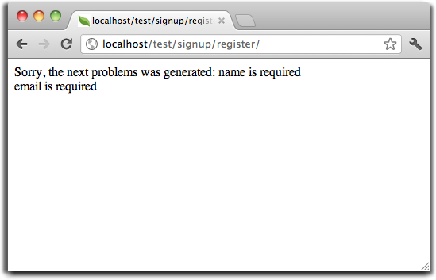

Table des matièresSujet précédentSujet suivantCette page |
Tutorial 1: Let’s learn by example¶Throughout this first tutorial, we’ll walk you through the creation of an application with a simple registration form from the ground up. We will also explain the basic aspects of the framework’s behavior. If you are interested in automatic code generation tools for Phalcon, you can check our developer tools. Checking your installation¶We’ll assume you have Phalcon installed already. Check your phpinfo() output for a section referencing “Phalcon” or execute the code snippet below: <?php print_r(get_loaded_extensions()); ?>
The Phalcon extension should appear as part of the output: Array
(
[0] => Core
[1] => libxml
[2] => filter
[3] => SPL
[4] => standard
[5] => phalcon
[6] => pdo_mysql
)
Creating a project¶The best way to use this guide is to follow each step in turn. You can get the complete code here. File structure¶Phalcon does not impose a particular file structure for application development. Due to the fact that it is loosely coupled, you can implement Phalcon powered applications with a file structure you are most comfortable using. For the purposes of this tutorial and as a starting point, we suggest the following structure: tutorial/
app/
controllers/
models/
views/
public/
css/
img/
js/
Note that you don’t need any “library” directory related to Phalcon. The framework is available in memory, ready for you to use. Beautiful URLs¶We’ll use pretty (friendly) urls for this tutorial. Friendly URLs are better for SEO as well as they are easy for users to remember. Phalcon supports rewrite modules provided by the most popular web servers. Making your application’s URLs friendly is not a requirement and you can just as easy develop without them. In this example we’ll use the rewrite module for Apache. Let’s create a couple of rewrite rules in the /.htaccess file: #/.htaccess
<IfModule mod_rewrite.c>
RewriteEngine on
RewriteRule ^$ public/ [L]
RewriteRule (.*) public/$1 [L]
</IfModule>
All requests to the project will be rewritten to the public/ directory making it the document root. This step ensures that the internal project folders remain hidden from public viewing and thus posing security threats. The second set of rules will check if the requested file exists, and if it does it doesn’t have to be rewritten by the web server module: #/public/.htaccess
<IfModule mod_rewrite.c>
RewriteEngine On
RewriteCond %{REQUEST_FILENAME} !-d
RewriteCond %{REQUEST_FILENAME} !-f
RewriteRule ^(.*)$ index.php?_url=/$1 [QSA,L]
</IfModule>
Bootstrap¶The first file you need to create is the bootstrap file. This file is very important; since it serves as the base of your application, giving you control of all aspects of it. In this file you can implement initialization of components as well as application behavior. The public/index.php file should look like: <?php
try {
//Register an autoloader
$loader = new \Phalcon\Loader();
$loader->registerDirs(array(
'../app/controllers/',
'../app/models/'
))->register();
//Create a DI
$di = new Phalcon\DI\FactoryDefault();
//Setting up the view component
$di->set('view', function(){
$view = new \Phalcon\Mvc\View();
$view->setViewsDir('../app/views/');
return $view;
});
//Handle the request
$application = new \Phalcon\Mvc\Application($di);
echo $application->handle()->getContent();
} catch(\Phalcon\Exception $e) {
echo "PhalconException: ", $e->getMessage();
}
Autoloaders¶The first part that we find in the bootstrap is registering an autoloader. This will be used to load classes as controllers and models in the application. For example we may register one or more directories of controllers increasing the flexibility of the application. In our example we have used the component Phalcon\Loader. With it, we can load classes using various strategies but for this example we have chosen to locate classes based on predefined directories: <?php
$loader = new \Phalcon\Loader();
$loader->registerDirs(
array(
'../app/controllers/',
'../app/models/'
)
)->register();
Dependency Management¶A very important concept that must be understood when working with Phalcon is its dependency injection container. It may sound complex but is actually very simple and practical. A service container is a bag where we globally store the services that our application will use to work. Each time the framework requires a component, it will ask the container using an agreed upon name for the service. Since Phalcon is a highly decoupled framework, Phalcon\DI acts as glue facilitating the integration of the different components achieving their work together in a transparent manner. <?php
//Create a DI
$di = new Phalcon\DI\FactoryDefault();
Phalcon\DI\FactoryDefault is a variant of Phalcon\DI. To make things easier, it has registered most of the components that come with Phalcon. Thus we should not register them one by one. Later there will be no problem in replacing a factory service. In the next part, we register the “view” service indicating the directory where the framework will find the views files. As the views do not correspond to classes, they cannot be charged with an autoloader. Services can be registered in several ways, but for our tutorial we’ll use lambda functions: <?php
//Setting up the view component
$di->set('view', function(){
$view = new \Phalcon\Mvc\View();
$view->setViewsDir('../app/views/');
return $view;
});
In the last part of this file, we find Phalcon\Mvc\Application. Its purpose is to initialize the request environment, route the incoming request, and then dispatch any discovered actions; it aggregates any responses and returns them when the process is complete. <?php
$application = new \Phalcon\Mvc\Application($di);
echo $application->handle()->getContent();
As you can see, the bootstrap file is very short and we do not need to include any additional files. We have set ourselves a flexible MVC application in less than 30 lines of code. Creating a Controller¶By default Phalcon will look for a controller named “Index”. It is the starting point when no controller or action has been passed in the request. The index controller (app/controllers/IndexController.php) looks like: <?php
class IndexController extends \Phalcon\Mvc\Controller
{
public function indexAction()
{
echo "<h1>Hello!</h1>";
}
}
The controller classes must have the suffix “Controller” and controller actions must have the suffix “Action”. If you access the application from your browser, you should see something like this: 
Congratulations, you’re flying with Phalcon! Sending output to a view¶Sending output on the screen from the controller is at times necessary but not desirable as most purists in the MVC community will attest. Everything must be passed to the view that is responsible for outputting data on screen. Phalcon will look for a view with the same name as the last executed action inside a directory named as the last executed controller. In our case (app/views/index/index.phtml): <?php echo "<h1>Hello!</h1>";
Our controller (app/controllers/IndexController.php) now has an empty action definition: <?php
class IndexController extends \Phalcon\Mvc\Controller
{
public function indexAction()
{
}
}
The browser output should remain the same. The Phalcon\Mvc\View static component is automatically created when the action execution has ended. Learn more about views usage here . Designing a sign up form¶Now we will change the index.phtml view file, to add a link to a new controller named “signup”. The goal is to allow users to sign up in our application. <?php
echo "<h1>Hello!</h1>";
echo Phalcon\Tag::linkTo("signup", "Sign Up Here!");
The generated HTML code displays an “A” html tag linking to a new controller: <h1>Hello!</h1> <a href="/test/signup">Sign Up Here!</a>
To generate the tag we use the class Phalcon\Tag. This is a utility class that allows us to build HTML tags with framework conventions in mind. A more detailed article regarding HTML generation can be found here

Here is the controller Signup (app/controllers/SignupController.php): <?php
class SignupController extends \Phalcon\Mvc\Controller
{
public function indexAction()
{
}
}
The empty index action gives the clean pass to a view with the form definition: <?php use Phalcon\Tag; ?>
<h2>Sign using this form</h2>
<?php echo Tag::form("signup/register"); ?>
<p>
<label for="name">Name</label>
<?php echo Tag::textField("name") ?>
</p>
<p>
<label for="name">E-Mail</label>
<?php echo Tag::textField("email") ?>
</p>
<p>
<?php echo Tag::submitButton("Register") ?>
</p>
</form>
Viewing the form in your browser will show something like this: 
Phalcon\Tag also provides useful methods to build form elements. The Phalcon\Tag::form method receives only one parameter for instance, a relative uri to a controller/action in the application. By clicking the “Send” button, you will notice an exception thrown from the framework, indicating that we are missing the “register” action in the controller “signup”. Our public/index.php file throws this exception:
Implementing that method will remove the exception: <?php
class SignupController extends \Phalcon\Mvc\Controller
{
public function indexAction()
{
}
public function registerAction()
{
}
}
If you click the “Send” button again, you will see a blank page. The name and email input provided by the user should be stored in a database. According to MVC guidelines, database interactions must be done through models so as to ensure clean object-oriented code. Creating a Model¶Phalcon brings the first ORM for PHP entirely written in C-language. Instead of increasing the complexity of development, it simplifies it. Before creating our first model, we need a database table to map it to. A simple table to store registered users can be defined like this: CREATE TABLE `users` (
`id` int(10) unsigned NOT NULL AUTO_INCREMENT,
`name` varchar(70) NOT NULL,
`email` varchar(70) NOT NULL,
PRIMARY KEY (`id`)
);
A model should be located in the app/models directory. The model mapping to “users” table: <?php
class Users extends \Phalcon\Mvc\Model
{
}
Setting a Database Connection¶In order to be able to use a database connection and subsequently access data through our models, we need to specify it in our bootstrap process. A database connection is just another service that our application has that can be use for several components: <?php
try {
//Register an autoloader
$loader = new \Phalcon\Loader();
$loader->registerDirs(array(
'../app/controllers/',
'../app/models/'
))->register();
//Create a DI
$di = new Phalcon\DI\FactoryDefault();
//Set the database service
$di->set('db', function(){
return new \Phalcon\Db\Adapter\Pdo\Mysql(array(
"host" => "localhost",
"username" => "root",
"password" => "secret",
"dbname" => "test_db"
));
});
//Setting up the view component
$di->set('view', function(){
$view = new \Phalcon\Mvc\View();
$view->setViewsDir('../app/views/');
return $view;
});
//Handle the request
$application = new \Phalcon\Mvc\Application($di);
echo $application->handle()->getContent();
} catch(Exception $e) {
echo "PhalconException: ", $e->getMessage();
}
With the correct database parameters, our models are ready to work and interact with the rest of the application. Storing data using models¶Receiving data from the form and storing them in the table is the next step. <?php
class SignupController extends \Phalcon\Mvc\Controller
{
public function indexAction()
{
}
public function registerAction()
{
$user = new Users();
//Store and check for errors
$success = $user->save($this->request->getPost(), array('name', 'email'));
if ($success) {
echo "Thanks for register!";
} else {
echo "Sorry, the following problems were generated: ";
foreach ($user->getMessages() as $message) {
echo $message->getMessage(), "<br/>";
}
}
}
}
We then instantiate the Users class, which corresponds to a User record. The class public properties map to the fields of the record in the users table. Setting the relevant values in the new record and calling save() will store the data in the database for that record. The save() method returns a boolean value which informs us on whether the storing of the data was successful or not. The ORM automatically escapes the input preventing SQL injections so we only need to pass the request to the method save(). Additional validation happens automatically on fields that are not null (required). If we don’t type any of the required files our screen will look like this:

Conclusion¶This is a very simple tutorial and as you can see, it’s easy to start building an application using Phalcon. The fact that Phalcon is an extension on your web server has not interfered with the ease of development or features available. We invite you to continue reading the manual so that you can discover additional features offered by Phalcon! Sample Applications¶The following Phalcon powered applications are also available, providing more complete examples:
|